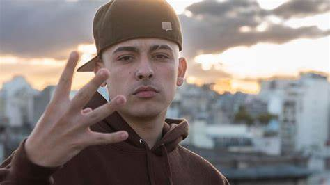
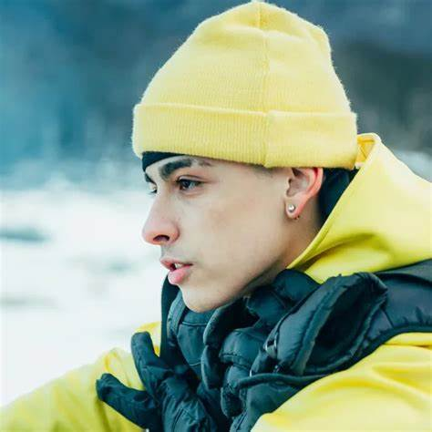

Comenzó su carrera en las batallas de freestyle a los catorce años, cuando intentó participar en los torneos porteños "A Cara de Perro Zoo Juniors" y "Red Bull Regional". Al año siguiente, se consagró campeón de la competencia "A Cara de Perro Zoo Juniors". Más tarde participó en varios torneos de freestyle, tanto nacionales como internacionales.
Comenzó su carrera en las batallas de freestyle a los catorce años, cuando intentó participar en los torneos porteños "A Cara de Perro Zoo Juniors" y "Red Bull Regional". Al año siguiente, se consagró campeón de la competencia "A Cara de Perro Zoo Juniors". Más tarde participó en varios torneos de freestyle, tanto nacionales como internacionales.
En 2020 lanzó su álbum debut de estudio Atrevido, bajo el sello discográfico Neuen y distribuido por Sony Music Latin.4 En 2022 lanzó su segundo álbum de estudio titulado Bien o mal bajo su sello Sur Capital Records. En 2024 publicó su tercer álbum de estudio El último baile, que consta de trece canciones.

Mateo Palacios Corazzina nació el 25 de marzo de 2002 en La Boca, barrio perteneciente a la Ciudad Autónoma de Buenos Aires.5 Es hijo de Juliana Corazzina y Pedro Palacios, un rapero uruguayo conocido por su nombre artístico MC Peligro —exmiembro del grupo Diferentes Actitudes Juveniles y actual líder del colectivo artístico Sur Capital Clika—.6 Su abuelo paterno, Yamandú Palacios, también fue un destacado músico y guitarrista del género folklore, habiendo llegado a tocar junto a artistas como Alfredo Zitarrosa, Joaquín Sabina o Joan Manuel Serrat. Como manifestó en varias entrevistas la música de su padre fue su más grande influencia musical.6 Desde los tres años y gracias al apoyo que su padre le proporcionó, comenzó a realizar beatbox,6 a la vez que se interesó por el break dance.7 Pedro Palacios, en una entrevista con el periódico Clarín, comentó que le prestó un micrófono a Mateo cuando tenía cuatro años, con el fin de que probase el sonido: «Me hizo los coros de un tema contra el paco. Se sabía toda la letra».7 A pesar de estar fuertemente influenciado por la música hip hop, no se enamoró del género hasta sus cinco años, cuando vio la película 8 Mile —de 2003; dirigida por el cineasta estadounidense Curtis Hanson—, que llevó a que su padre lo llevase a una batalla de gallos, donde conoció el freestyle.7 Según comentó Trueno al medio Urban Roosters, comenzó a rapear cuando tenía siete años de edad y contó con el apoyo de sus profesores, quienes «entendían lo que hacía».8 A la par que practicaba con la música, decidió abrir a sus doce años, un canal de YouTube llamado Mateo Palacios donde subía principalmente videoblogs con temáticas humorísticas.9Tuvo de pareja a otra artista argentina conocida apodada Nicki Nicole1011